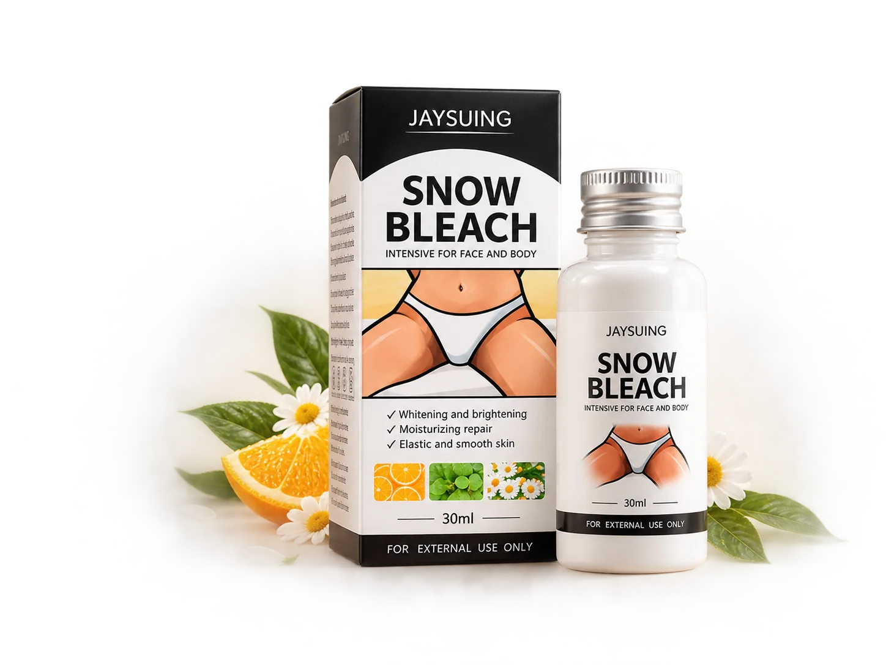
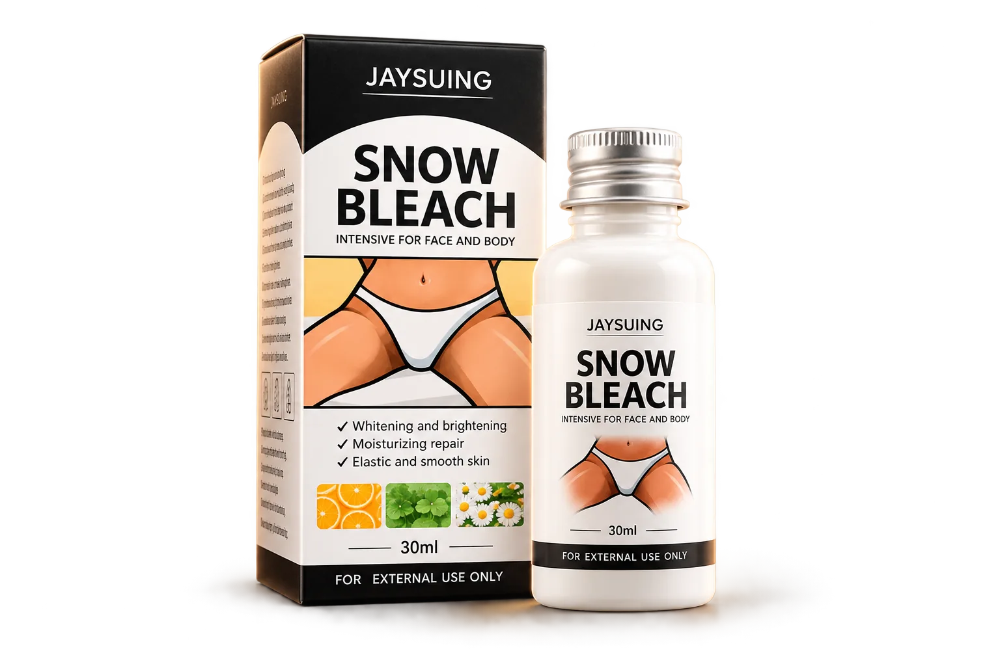

Uniformidade + barreira
Niacinamida
Conhecida no cuidado cosmético por auxiliar a barreira da pele e contribuir para uma aparência mais uniforme.
Hidratação, luminosidade e cuidado cosmético para uma aparência mais uniforme da pele.
ASSISTIR AO VÍDEO
Assista ao vídeo e conheça uma rotina simples de cuidado para essas regiões da pele.
Se o que você viu faz sentido para a sua rotina, continue e conheça o produto em detalhes.
CONHECER LUMÉRA CREAMCuidar das axilas, da virilha e de outras regiões também pode fazer parte de uma rotina simples de autocuidado.
Luméra Cream é apresentado como um creme cosmético para face e corpo, pensado para hidratação, luminosidade e cuidado da aparência da pele.
Luméra Cream — nome comercial. Produto entregue na embalagem original Snow Bleach, 30 ml.
Cuidado cosmético voltado à aparência de áreas escurecidas.
Ajuda a manter a pele hidratada e confortável.
Uma rotina consistente para uma aparência mais luminosa.
Do pescoço às áreas que pedem um cuidado especial, uma rotina simples para diferentes regiões da pele.
Uso externo. Evite contato com mucosas.
Cada ingrediente tem um papel diferente na proposta de cuidado.
Conhecida no cuidado cosmético por auxiliar a barreira da pele e contribuir para uma aparência mais uniforme.
Ingrediente antioxidante amplamente usado em cosméticos voltados à luminosidade e aparência do tom da pele.
Conhecida por seu uso em fórmulas cosméticas de cuidado e conforto da pele.
Tradicionalmente utilizada em cosméticos formulados com foco em suavidade e conforto.
Utilizada em produtos cosméticos para condicionamento, conforto e sensação de maciez da pele.
Comece com a região limpa e seca.
Distribua uma quantidade apropriada uniformemente sobre a pele.
Massageie suavemente até a absorção. As instruções do produto orientam uso pela manhã e à noite.
Cosméticos não transformam a pele de uma hora para outra. Resultados e percepção podem variar de pessoa para pessoa.
Textura, praticidade e cuidado diário em uma rotina simples.

1 unidade • 30 ml
Após a limpeza, aplique uma quantidade apropriada e massageie suavemente até a absorção. As instruções do produto orientam uso pela manhã e à noite.
Axilas, joelhos, cotovelos, pescoço, bumbum e virilha (região externa). A aplicação é sempre externa: evite olhos, mucosas e regiões internas.
A embalagem e as informações do produto indicam uso externo, e a virilha está entre as regiões citadas. Evite mucosas e regiões internas.
As instruções recomendam teste de contato antes do primeiro uso e cautela em pele sensível.
As instruções do produto orientam uso pela manhã e à noite. Se sua pele for sensível, faça antes o teste de contato.
Uma unidade com 30 ml.
As instruções do produto mencionam que uma melhora perceptível pode ser observada após uma semana de uso contínuo. A experiência individual pode variar.
Inclua Luméra Cream na sua rotina de cuidado diário.
QUERO EXPERIMENTAR POR R$ 129,90